Covariance models¶
We consider  a multivariate
stochastic process of dimension
a multivariate
stochastic process of dimension  , where
, where  is an event,
is an event,  is a domain of
is a domain of  ,
,
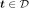
is a multivariate index and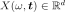
.We note
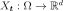
the random variable at index defined by
defined by
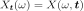
and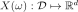
a realization of the process , for a given defined by
, for a given defined by
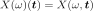
.If the process is a second order process, we note:
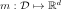
its mean function, defined by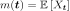
,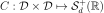
its covariance function, defined by ,
,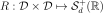
its correlation function, defined for all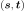
, by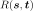
such that for all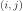
,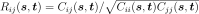
.
In a general way, the covariance models write:
where:
 is the scale parameter
is the scale parameter id the amplitude parameter
id the amplitude parameter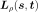
is the Cholesky factor of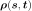
:
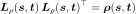
The correlation function
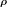
may depend on additional specific parameters which are not made explicit here.The global correlation is given by two separate correlations:
the spatial correlation between the components of
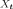
which is given by the correlation matrixand the vector of marginal variances
, it links together the components of .
the correlation between
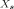
and which is given by .
In the general case, the correlation links each component
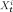
to all the components of and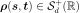
;In some particular cases, the correlation is such that depends only on the component
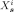
and that link does not depend on the component. In that case, can be defined from the scalar function
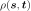
by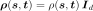
. Then, the covariance model writes:
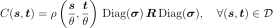
API: